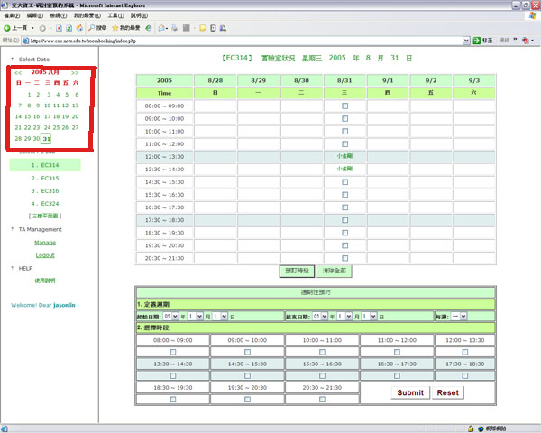

© LAB 預約系統使用說明
| 0. 登入 ，請使用 CS 信箱帳號密碼 |
1. 選擇您要預借的日期 |
 |
說明: 點選左/右箭頭可變更月份。點選日期數字可變更日期。 |
2. 選擇您要預借的實驗室 |
系計中電腦教室僅供使用者瀏覽借用狀況，暫不開放直接預借; 如有需要，請洽系計中。 |
3. 勾選預借時段 |
說明: 右邊頁框會顯示您所選擇的研討室借用狀況; 在您所選擇的日期欄位內，尚未被借走的時段會有核取方塊供您勾選; 勾選完畢請點擊 "預訂時段" 按鈕。 |
4. 填寫預借資訊 |
說明: 點擊 "預訂時段" 按鈕後，瀏覽器會導向此一表單頁面。請填寫預約者帳號或姓名、E-mail 及 EXT(校內分機)， 以便日後異動聯絡。 |
5a. 預借成功 |
說明: 預借成功，瀏覽器會自動回到借用狀況檢視頁面。 |
5b. 預借失敗 |
說明: 預借失敗的原因為: 在您勾選時段、填寫預借資訊的同時，有其他使用者剛好完成了相同時段的預借手續。請回到檢視頁面勾選其它時段。 |
6. 查詢借用者資訊 |
說明: 在借用狀況檢視頁面中，被借走的時段欄位會顯示借用者的帳號/姓名; 點擊此帳號可檢視該筆借用資訊，包括借用者聯絡資料等；頁面如下圖所示。 |
7. 檢視／刪除您的預借 |
說明: 請點選左下角 Manage 連結，可檢視您所選取的實驗室在該日期的借用狀況。此頁面可作預借記錄的刪除動作。 |
|
8. 預約每個禮拜的同一天同一個時段 |
|